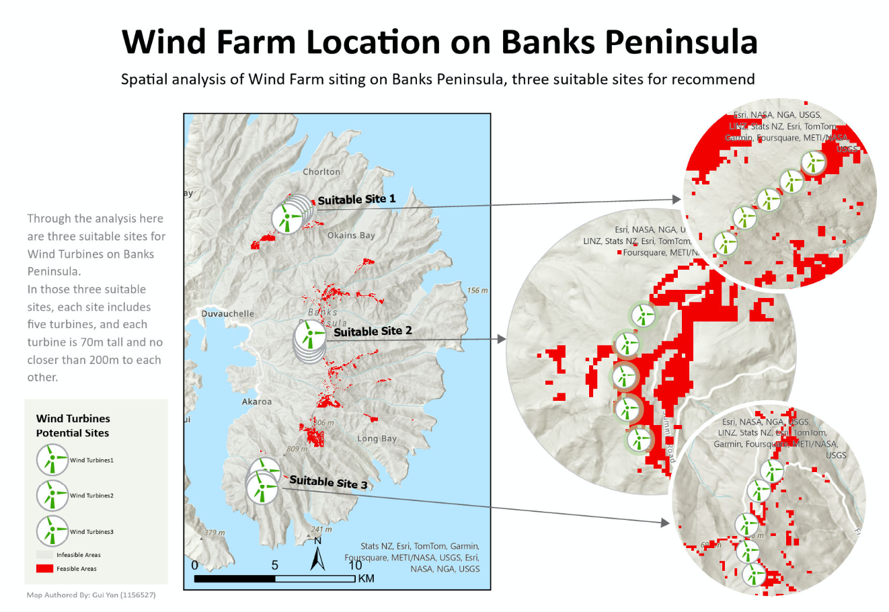
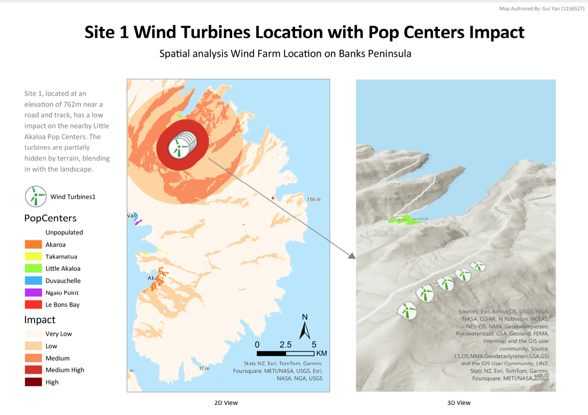

← Go Back
GIS Location Project: Wind Farm siting on Banks Peninsula


The aim of this project is to determine the best location for a small wind farm on Banks Peninsula.
- The farm will consist of five 500kW wind turbines mounted on 70 m tall towers.
- This would provide enough electricity to supply the needs of around 600 households - roughly the whole population in the study area!
- The three most suitable preliminary locations for a five turbine wind farm.
- The visual and noise impacts will be evaluated and a final choice for the best site will be made and recommended.